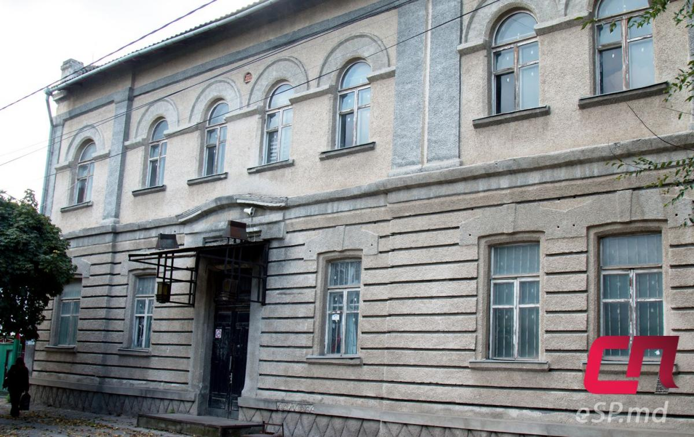
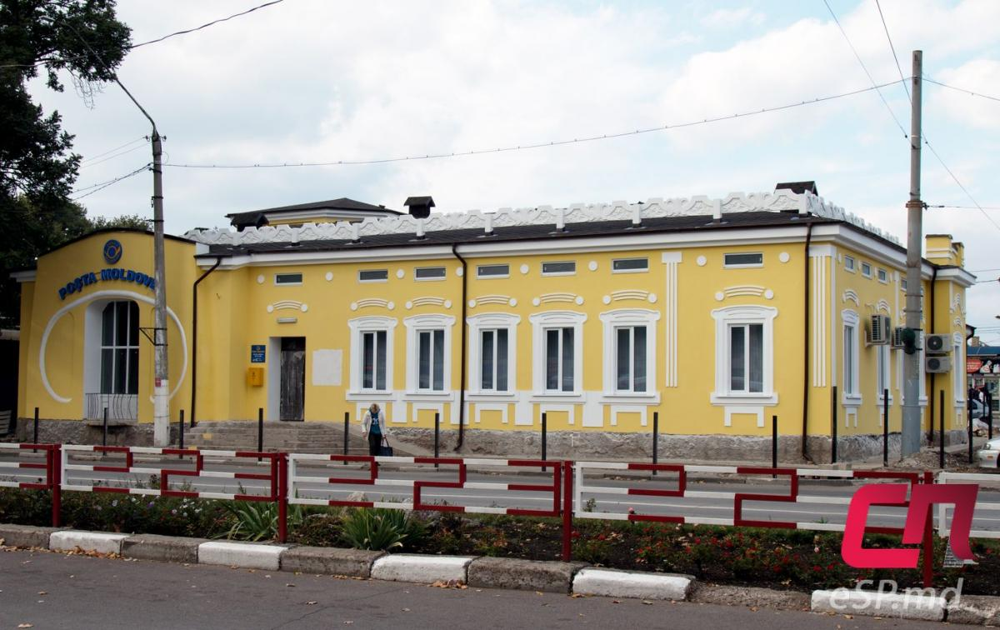

Интерестные места
Национальный театр имени Васи́ле Алекса́ндри
16 мая 1957 года при русском театре в Бельцах была создана молдавская труппа. 16 мая 1990 года труппа переезжает в новое здание и становится «Национальным театром имени Василе Александри города Бельцы». В построенном по проекту архитектора Янины Гальпериной театре имеются большой и малый залы, круговая сцена. За эти годы, в театре поставлено около 190 спектаклей для взрослых и детей — классического и современного, национального и международного репертуара. Театр имени Василе Александри является одним из основных художественных театров страны занимающего постановкой национальной драматургии. Это театр, больше чем любое национальный, потому что его репертуар составлен главным образом из текстов авторов из Молдавии и Румынии. Здесь были собраны произведения таких «ветеранов пера» как Ион Друцэ, Дмитрий Матковский, Петру Кэраре, и авторами текстов, которые были напечатаны в последние годы: В. Бутнару, Мирча В. Чебану, К. Чеяру. Все артисты театра В. Александри являются выпускниками Университета искусств Молдовы. Директор театра — Анатол Рэчилэ.
Собор Святого Николая

это православный храм, который расположен в городе Бельцы в Молдавии. Храм был основан в 1836 году и является одним из наиболее значимых исторических и религиозных мест в Молдавии. Собор был построен в стиле русского барокко и является прекрасным примером архитектуры того времени. В храме находится множество ценных икон и других религиозных артефактов, которые привлекают множество паломников и туристов. В храме также проводятся богослужения и другие религиозные мероприятия, а также культурные и общественные мероприятия. Бельцкий Собор Святого Николая является важным символом православной веры в Молдавии и одним из главных достопримечательностей города Бельцы.
Дом Хаджи-Маркарова
Оно было построено лидером армянской диаспоры, председателем Бельцкой уездной земской управы Яковом Григорьевичем Хаджи-Маркаровым в конце XIX века. Дом был построен из красного кирпича с арочными окнами, неровными архитектурными элементами на фронтонах, окружено кованым забором. Судя по почтовой открытке начала XX века, в здании до революции 1917 года некоторое время располагалось Общество взаимного кредита (такие объединения создавались в России с целью обеспечения своих членов дешёвым кредитом, в основном краткосрочным на предпринимательские нужды). В 20–30-е годы в здании работала бельцкая примария. Реконструкцией интерьера в 1936–1937 гг. руководила архитектор Этти-Роза Спирер. В советское время здесь располагалась поликлиника. В 1988 году объект передали заводу «40 лет МССР» (ныне «Bălţeanca»). До недавнего времени тут находился фирменный магазин фабрики. Сейчас здание пустует, на втором этаже окна не полностью остеклены. Очевидно, что оно не ухожено. По данным кадастра, дом по-прежнему является собственностью фабрики «Bălţeanca».
«Старая почта»
Дом мог быть снесён в советское время, как и другие старые здания в центре города, но его «защитила» «революционная история». В 1918 году здесь размещался Совет рабочих, крестьянских и солдатских депутатов, который выступил против решения Сфатул Цэрий об объединении Бессарабии с Румынией. Ранее на стенах была табличка, сообщавшая об этом событии. В процессе эксплуатации здания в качестве почтового отделения многие уникальные архитектурные элементы были утеряны. Сейчас дом в состоянии капитального ремонта. Руководство госпредприятия «Posta Moldovei» попыталось приблизить облик сооружения к его историческому виду. Однако некоторые элементы, как например, художественные решётки на окнах, зданию пока не вернулись.